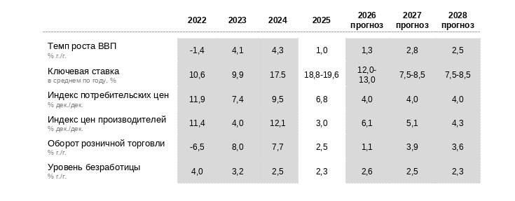
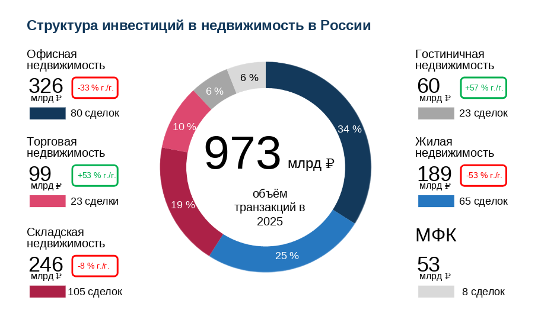
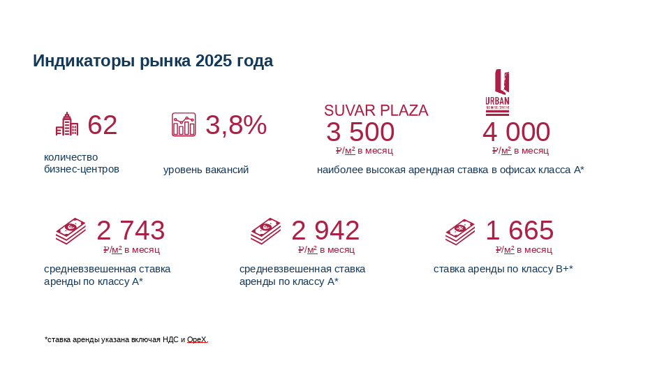
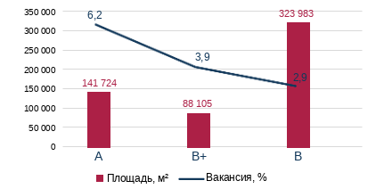
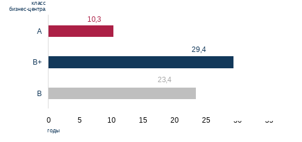
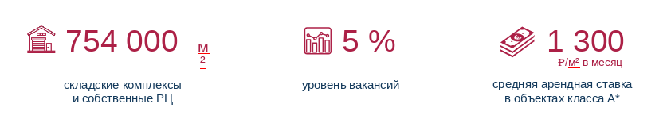
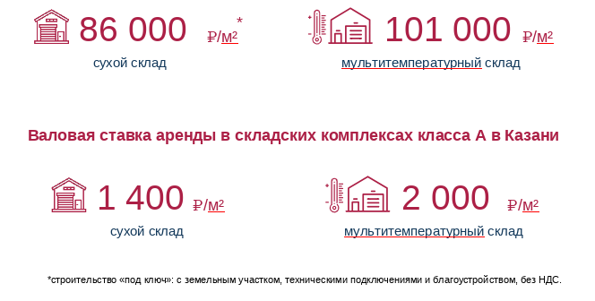
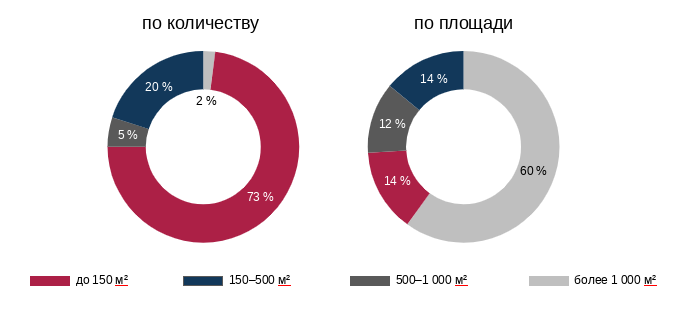
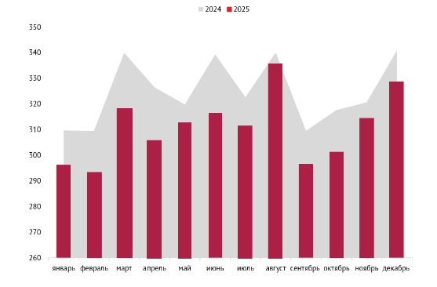

Заголовок новости или статьи
Макроэкономические показатели
Ключевые индикаторы
В IV квартале 2025 года замедление экономики продолжилось. Прирост ВВП составил 1,0% после 4,3% за 2024 год в целом. Причинами охлаждения стали замедление деловой и потребительской активности.
С начала 2025 года фиксируется тенденция на замедление темпов роста заработных плат – на фоне снижения спроса на кадры в экономике и общего уровня напряженности на рынке труда. При этом совокупный показатель денежных доходов населения продолжает расти высокими темпами, в первую очередь, ввиду сохранения высоких ставок по банковским вкладам.
В 2026 темп роста ВВП будет сохраняться сдержанным, продемонстрировав восстановление не ранее 2027 года.
Ключевые индикаторы*

*источники: Росстат, Минэкономразвития, ЦБ РФ.
* *ключевая ставка указана на 15.10.2025 г. в % годовых
Инвестиции в недвижимость
Стабилизация объёма вложений в недвижимость
Совокупный объём инвестиций в недвижимость России по итогам 2025 года составил 973 млрд рублей. Рынок остается существенно активнее докризисного периода – текущий результат более чем в 3 раза превышает среднегодовые значения 2016–2021 гг. Такая динамика подтверждает сохранение устойчивого инвестиционного интереса к недвижимости даже в условиях сдержанного экономического роста.
Инвестиционные покупки играют ключевую роль в структуре сделок, на них пришлось около половины от совокупного объема вложений против 24% в прошлом году. Такой результат во многом был обеспечен закрытием ряда крупных транзакций, включая сделки, связанные с выходом иностранных компаний из российских активов.
В 2026 году рынок будет развиваться в условиях умеренного экономического роста и сохраняющейся высокой стоимости заемного капитала. По итогам года совокупный объем инвестиций в недвижимость России ожидается на уровне 650–700 млрд рублей, при этом на Москву придется около 500–550 млрд рублей, на Санкт-Петербург — 80–90 млрд рублей, а оставшиеся 60–70 млрд рублей распределятся между другими регионами.
В ближайшей перспективе уровень инвестиционной активности будет во многом определяться динамикой ключевой ставки Банка России, а также реализацией крупных сделок, которые уже продолжительное время находятся в стадии проработки. Их закрытие может существенно повлиять на совокупный объем инвестиций.

Офисная недвижимость в Казани
Ключевые тенденции в инвестициях *
Рост числа и объёма сделок по покупке офисных блоков продолжается благодаря расширению предложения и устойчивому спросу. За 2025 год объём подобных инвестиций достиг 98 млрд рублей, превысив показатель предыдущего года на 23%.
Наблюдается рост количества и объемов сделок с чеком до 500 млн руб. в строящихся и проектируемых офисных объектах — результат одновременно расширяющегося предложения на рынке и устойчивого интереса покупателей.
Основным драйвером инвестиционной активности в сегменте офисной недвижимости остается приобретение крупных бизнес-центров под собственные нужды компаний — на такие сделки пришлось более 50% совокупного объёма вложений. Инвестиционные сделки носят точечный характер на фоне ограниченного предложения объектов с потенциалом роста стоимости и низкой готовности собственников к продаже высокодоходных активов.
*по данным IBC Real Estate.

Развитие офисного рынка Казани во многом сдерживают высокие ставки аренды и низкая доступность кредитов. Бизнес предпочитает, по возможности, оставаться в текущих помещениях и оптимизировать текущий бизнес. Наблюдается небольшая переориентация спроса в сторону офисов класса B.
В связи с этим спрос на аренду офисных помещений можно охарактеризовать как «замерший». Количество запросов от клиентов на аренду офисных помещений не велико. Изменившиеся рыночные условия продолжают сдерживать деловую активность организаций, препятствуя её активному развитию.
Вакансия на конец IV квартала 2025 года* в данных объектах составила 5%, увеличившись на 4 п. п. в сравнении с III кварталом года. Данный факт объясняется высвобождением помещений в бизнес-центрах Orange и Kremlevskaya Plaza, а также выходом на рынок инфрастуктурных площадей в реконструируемом бизнес-центре «Сувар».
В первом полугодии 2026 года в сегменте качественных офисных объектов прогнозируется дополнительное высвобождение около 3 500 м² площадей, что дополнительно приведёт к росту уровня вакансии в рассматриваемых объектах.
*по данным PERFECT RED в исследовании проанализированы следующие бизнес-центры: «Сувар Плаза», «Булак», «Корстон», «Капитал», Kremlevskaya Plaza, Urban, Orange, «Татария».
Уровень вакансии по классам офисной недвижимости в Казани

Средний уровень вакансии по всем качественным бизнес-центрам составляет 3,8%, что указывает на высокий уровень заполняемости бизнес-центров.
Вакансия на конец IV квартала 2025 года составила 5%, увеличившись на 4 п. п. в сравнении с III кварталом года. Данный факт объясняется высвобождением помещений в бизнес-центрах Orange и Kremlevskaya Plaza, а также выходом на рынок инфрастуктурных площадей в реконструируемом бизнес-центре «Сувар».
В первом полугодии 2026 года в сегменте качественных офисных объектов прогнозируется дополнительное высвобождение около 3 500 м² площадей, что дополнительно приведёт к росту уровня вакансии.
Офисная недвижимость в Казани
Новости и тенденции
Рынок офисной недвижимости Казани в IV квартале 2025 года претерпел наибольшие изменения. Значительно вырос уровень вакансии, заявок по аренде поступает все меньше, девелоперы пересматривают проекты и откладывают сроки начала строительства.
Рядом с обновлённым зданием ЦУМа появится еще один современный бизнес-центр на улице Яхина, 4. Объект коммерческой недвижимости общей площадью приблизительно 4,3 тыс. м² будет иметь четыре надземных этажа.
Рост вакантных площадей в бизнес-центрах класса А обусловлен повышением ставок аренды при пролонгации контрактов. Это создает дополнительную финансовую нагрузку и вынуждает компании рассматривать возможность переезда в помещения классов B+/- с более доступными условиями, а также оптимизировать расходы через сокращение арендуемых площадей.
Рост объёма строящегося жилья и стрит-ритейла, а также офисных объектов небольшой площади в последние годы, частично компенсирует недостаток в сегменте качественных офисов и закрывает инвестиционный спрос со стороны частных инвесторов.
Устаревание существующего фонда офисных зданий создает благоприятные условия для реализации проектов нового строительства в городе Казани.
Главная тенденция рынка – все работают над эффективностью в управлении активами. Рынок снова разворачивается в сторону арендатора. В следующем году они будут занимать выигрышную позицию, так как на рынке увеличивается уровень вакансии, что предоставляет больший выбор помещений в разных локациях города. Также данная ситуация дает возможность запрашивать скидки или заходить на объект по более низкой ставке аренды.
Средний возраст бизнес-центров в Казани

Средний возраст бизнес-центра класса А в Казани составляет 10,3 лет, и сформирован проектами 2010–2024 годов постройки, которые отвечают спросу на современные офисы, в то время как большинство объектов класса В+ (29,4 года) построены в 1990-х на базе промышленных зданий. Их реновация началась только в 2010-х, что объясняет высокий средний возраст.
Тенденция к поддержанию баланса между работой и личной жизнью (work–life balance) оказывает прямое влияние на формат офисных пространств. Современные бизнес–центры все чаще проектируются с учетом потребности резидентов в спортивной и досуговой инфраструктуре. Тренажёрные залы, зоны для отдыха и wellness–пространства становятся неотъемлемой частью экосистемы деловых комплексов.
По оценкам участников рынка, каждый второй сотрудник сегодня заинтересован в возможности заниматься спортом непосредственно в офисе, что стимулирует девелоперов включать спортивные зоны в состав новых проектов. Ярким примером указанной тенденции является бизнес–центр UNO.
В целях повышения удержания арендаторов и снижения уровня вакансии коммерческих помещений арендодатели всё чаще прибегают к индивидуализированному подходу при заключении и продлении договоров аренды. Это проявляется в предоставлении гибких условий, в частности, возможности согласования нестандартных сроков аренды, введения так называемых «арендных каникул» (периодов льготной или безвозмездной аренды на начальном этапе), более низкую индексацию, а также в предоставлении опций по адаптации планировочных решений под специфику бизнеса арендатора.
Складская недвижимость в Казани
Ключевые тенденции в инвестициях *
Объёмы нового строительства складской недвижимости в 2025 году достигли исторического максимума. На фоне высокого спроса предыдущих лет в России было введено 8,7 млн м² складских площадей — рекордный показатель за всю историю наблюдений. Дополнительно на стадии строительства находится еще около 13 млн м², что отражает масштаб ранее сформированных девелоперских планов, несмотря на изменение рыночной конъюнктуры.
Большинство подобных сделок совершают УК, структурируя активы в формате ЗПИФ для частных инвесторов. По итогам 2025 года в интересах ЗПИФ было приобретено 20 объектов совокупной стоимостью 93 млрд руб., что соответствует 38% от общего объема инвестиций в сегмент. При этом решающими факторами при выборе объектов остаются их качество, текущее состояние объекта и наличие арендного потока.
Объем вложений в сегмент light industrial остается ограниченным, однако число сделок с чеком до 500 млн рублей растёт. В 2025 году было заключено 48 подобных сделок на 72,2 тыс. м² общей стоимостью 8,6 млрд рублей, тогда как в 2024 году – 20 сделок на 26,8 тыс. м² и 3 млрд рублей.
*по данным IBC Real Estate.
Складская недвижимость в Казани
Индикаторы рынка

В течение 2025 года на рынке складской недвижимости отмечено снижение спроса на складскую недвижимость.
Отметим, что новых объектов в течение первого полугодия введено не было, поэтому увеличение уровня вакансии связано с высвобождением площадей в уже построенных и эксплуатируемых объектах.
Стоимость строительства складских комплексов класса А в Казани

Несмотря на увеличение свободных площадей, арендные ставки не снижаются.
Складская недвижимость в Казани
Новости и тенденции
В индустриальном парке «Зеленодольск», вводится в эксплуатацию новый складской комплекс площадью 25 тыс. м².
В первой половине 2025 года рынок недвижимости, столкнулся с замедлением экономической активности и паузой в развитии компаний, высокая стоимость заемного капитала, удорожание строительства и ужесточение политики ЦБ РФ приводят к охлаждению сегмента недвижимости.
Темпы нового строительства замедлились. Девелоперам приходится искать баланс между растущей стоимостью строительства и необходимостью сохранять доходность проектов. Ключевыми становятся тщательный отбор локаций, оптимизация логистики и строительных процессов, а также разработка концепций.
Средняя площадь сделок снизилась примерно на 30-40%. Арендаторы запрашивают дисконт, который составляет порядка 5 -10%.
Доля сделок с представителями e-commerce снизилась до 16%. В тоже время сегмент food-ритейла укрепляет свои позиции, демонстрируя уверенный рост и увеличивая долю в структуре арендных сделок коммерческой недвижимости.
Компании стремятся эффективнее использовать арендуемые площади, что способствует появления субарендных предложений на рынке.
Значение операционных расходов выросло до 2 200 - 2 500 руб./м² в год без НДС, ключевые факторы роста это увеличение затрат на рабочую силу и рост стоимости комплектующих.
Торговая недвижимость в Казани
Ключевые тенденции в инвестициях*
По итогам 2025 года объем качественной торговой недвижимости России увеличился на рекордные 647 тыс. м² с 2021 года ввиду запуска крупных проектов, открытие которых неоднократно переносилось. В перспективе пяти лет темпы нового строительства будут снижаться. Объем проектов, находящихся на стадии строительства со сроком ввода до 2028 года, остается ограниченным и составляет порядка 1,8 млн м². Однако мы ожидаем, что фактический ввод будет ниже заявленного из-за пересмотра планов девелоперов и переноса сроков.
Активность в сегменте остается низкой и формируется в основном за счет единичных сделок. Половина реализованных объектов за 2025 год приходится на сделки, связанные с выходом иностранных компаний из российских активов и продажей ТЦ через торги.
Инвестиционный интерес к покупке помещений формата стрит-ритейла остается на высоком уровне, однако усиливается конкуренция со стороны офисных блоков. Наиболее распространенной стратегией является приобретение помещений площадью 50–600 кв. м, обеспечивающих гибкость использования и стабильность арендного дохода.
*по данным IBC Real Estate.Структура вакантных помещений в составе торговых центров Казани, %

В структуре свободных площадей по количеству преобладают небольшие помещения площадью до 150 м².
В IV квартале 2025 года уровень вакансии в торговых центрах г. Казани уменьшился на 3 п.п. и составил 4% в сравнении с предыдущим кварталом.
Снижение уровня вакансии связано с открытием новых арендаторов и расширением действующих торговых операторов в торговом центре «Мега». В IV квартале в торговом центре «Мега» открылись фитнес-клуб DDX fitness, книжный магазин «Читай-город» и салон «Стильные кухни и интерьеры». Магазины Zarina и Sela увеличили занимаемые площади и обновили свои форматы.
В ближайшее время в казанской «Меге» запланированы открытия детского развлекательного центра «Мисти Парк», зоомагазина «Маугли» и магазина бытовой техники Polaris. Магазин электроники DNS сменит текущее расположение и откроется в обновлённом формате. По соседству с DDX fitness планируется открытие кафе правильного питания Brooklyn Fit — нового формата от Brooklyn Pizza.
Также в торговом центре Park House расширился арендатор HENDERSON и открылся COLIN’S, они заняли бывшие площади Stradivarius и Pull&Bear.
Всего за IV квартал было открыто 27 новых магазинов, тогда как в предыдущем квартале было открыто 22 магазина.
Темп открытия новых магазинов за год вырос на 25%. Всего в 2025 году их открылось 99 шт. (в 2024 году было открыто 74 магазина).
В 2025 году показатели посещаемости торговых центров продемонстрировали умеренное снижение по сравнению с 2024 годом.
*на основе анализа PERFECT RED десяти торговых центров Казани: «Савиново», MEGA , «Тандем», «Парк Хаус», «Кольцо», XL, «Франт», «Южный», «Республика», «ГоркиПарк».
Торговая недвижимость в Казани
Новости и тенденции
Активно ведется реконструкция казанского ЦУМа.
В августе начал работу торговый комплекс «Мегастиль» площадью более 16 000 м², на территории которого запланировано разместить более 750 торговых точек и который будет работать в формате оптово-розничного комплекса.
Развитие торговых сетей сокращается. Те сети, которые продолжают открывать новые магазины, уменьшают их площади. Структура свободных площадей соответствует данному тренду, большая их часть это небольшие помещения площадью до 150 кв. м.
Запрашиваемые арендные ставки для новых арендаторов в торговых центрах существенно не изменились, и тренда на корректировку коммерческих условий не наблюдается. Фокус ритейлеров смещается на усовершенствование существующих точек.
Девелоперы отдают предпочтение небольшим районным объектам. Подобная тенденция обеспечивает получение прибыли и сохранение накопленного капитала.
Сохраняет актуальность тенденция преобразования стандартных торговых центров в многофункциональный формат, включающий зоны отдыха и социальные сервисы. Так в «Меге» на месте бывшего OBI появятся фитнес-центр, магазин мебели и детский развлекательный центр.
Ввиду углубления интеграции онлайна в повседневность многие игроки отдают предпочтение развитию в онлайне, представляя ассортимент своего бренда на маркетплейсах. Также ритейлеры фокусируются и на объединении онлайни офлайн-торговли. Например, возврат онлайн покупок в физических магазинах, заказ товаров онлайн с доставкой в магазин.
Также собственникам торговых центров важно концентрироваться не только на максимизации арендной ставки, но и на привлечении операторов, способных удерживать внимание аудитории и формировать целевой спрос. То есть приоритет должен смещаться в сторону тех, кому платят клиенты, а не просто тем, кто платит арендодателю.
Со стороны покупателей усилился тренд на разумное потребление. На фоне высокой стоимости заимствований и общей нестабильности экономики население ориентируется на сбережения, что приводит к сдержанному потребительскому спросу. Определяющим фактором потребителя в современных условиях становится цена, которая всё чаще выступает главным критерием выбора товаров и услуг.
По данным Mall Index, в третьем квартале посещаемость торговых центров выросла на 4% относительно предыдущего периода. При этом доля «пустого» трафика — посетителей, не совершающих покупок, — по оценкам экспертов достигает порядка 30%. Торговым центрам становится всё сложнее удерживать трафик в условиях растущейконкуренции со стороны общественных пространств и коммерческой инфраструктуры, формируемой в составе новых жилых районов и маркетплейсов.
Mall index. Динамика количества посетителей в сегменте крупных ТЦ на 1 000 м² GLA в среднем в день

Вакансия на конец IV квартала 2025 года, в выбранных Заказчиком торговых центрах, составила 6%, сократившись на 1 п. п. в сравнении с прошлым кварталом. Уменьшение уровня вакансии связано со значительным уменьшением свободных площадей в ТЦ «Мега». Сохраняется высокая вакансия в торговых центрах «Республика» и «Кольцо» - по 12% в каждом. В оставшихся торговых центрах из перечня уровень вакансии сохраняется на уровне менее 10%.
Строительство новых крупных торговых центров в 2026 году не запланировано.
Стрит-ритейл
Точные решения и осознанный рост*
2025-й для стрит-ритейла стал годом, когда рынок окончательно перешел в режим выжидания и точечных решений. Спрос со стороны арендаторов остается сдержанным и новых качественных помещений за последние годы появилось кратно меньше.
В цифрах рынок стрит-ритейла по итогам 2025 года выглядит так. Вакантность в городах-миллионниках держится на уровне 7–9%, практически без изменений к прошлому году. В торговых центрах показатель стабилизировался в диапазоне 8–11%. Для сравнения: в 2022–2023 годах в отдельных локациях вакантность доходила до 10–12%, а в доковидный период считались нормой уровни 4–6%. Это говорит о том, что стабилизация произошла давно, но дальнейшего движения рынок пока не получил.
Спрос также остается сдержанным.
Количество сделок аренды в 2025 году выросло всего на 3–5% год к году, что скорее отражает инерционную активность, чем разворот тренда. Рост носит точечный характер: его формируют общепит и сервисные форматы в центральных районах городов-миллионников, тогда как fashion-ритейл и непродовольственные категории остаются осторожными. При этом арендные ставки по-прежнему отстают от накопленной инфляции на 20–30%, а переоценку объектов сдерживает высокая стоимость финансирования и ставка Банка России.
По итогам года спрос можно описать так: аккуратный, точечный рост на хорошие локации. Не «везде понемногу», а именно там, где понятен трафик и понятна экономика. Второй сегмент, где спрос ощутимо оживился,— жилые районы с высокой плотностью и сформированным средним классом.
*на основе статьи Фёдора Степанова в Коммерсантъ. Недвижимость.
В Москве это отдельные кластеры в Хамовниках и на Ленинградском проспекте, в регионах — центральные кварталы Екатеринбурга и Казани с активным локальным трафиком. Здесь растет интерес со стороны сервисных форматов и общепита «у дома», которые лучше всего чувствуют себя в условиях сдержанного спроса.
При этом локации без устойчивого трафика, вторые линии и новые районы без сформированной среды остаются вне этого движения. Рынок в 2025 году четко показывает: спрос возвращается не на метры, а на проверенные места, где экономика работает даже в фазе паузы.
Отдельный фон 2025 года — доходы в реальном выражении фактически стоят на месте, поэтому и потребительский спрос не разгоняет ритейл, а вместе с ним не разгоняется и рынок помещений. Однако, по мнению ряда аналитиков, это формирует более ответственного и лояльного покупателя, который ценит качество сервиса и уникальность предложения.
Ключевым фактором текущего равновесия остается предложение. Ввод новых торговых площадей в 2024–2025 годах находится на минимуме за последние 10–15 лет и в 2–2,5 раза ниже средних показателей 2016–2019 годов. Девелоперы практически не запускают спекулятивные проекты — экономика новых объектов на фоне дорогих денег остается предельно напряженной. Рынок живет за счет перераспределения существующих площадей, а не за счет расширения. В таких условиях запуск новых проектов для арендаторов остается дорогим.Совокупные затраты на открытие точки стрит-ритейла в 2025 году выросли на 30–50% по сравнению с 2021 годом, а в сегменте общепита — в 1,5–1,7 раза.
Сроки выхода на операционную окупаемость сместились с привычных 18–24 до 30–36 месяцев, и при текущих арендных ставках многие модели просто перестают сходиться. Поэтому до 70% сделок аренды сегодня — это релокации, оптимизация или перезапуск существующих концепций, а не массовый выход новых брендов.
Дополнительное давление оказывают последствия ухода иностранных сетей в 2022 году. Часть площадей так и не получила полноценной замены, и в отдельных локациях рынок фактически сузился на 5–10% по эффективному спросу, особенно в сегменте фешен. Это усиливает ощущение паузы: рынок не падает, но и не расширяется.Кто чувствовал себя сильнее, а кому было тяжелее
В структуре спроса в 2025 году принципиальных изменений не произошло — рынок по-прежнему держится на форматах с предсказуемым трафиком и понятной экономикой. По оценкам брокеров и управляющих компаний, до 65–70% всех новых открытий в стрит-ритейле пришлось на четыре категории: общепит и кофе, цветы, пункты выдачи заказов и продукты. Если смотреть на занимаемые площади, их доля немного ниже — около 55–60%, но именно эти форматы формируют основную инвестиционную и арендную активность года.
Наибольшую долю по количеству сделок в 2025 году занял общепит и кофе — порядка 30–35% новых открытий, прежде всего в формате небольших кафе, пекарен и демократичных ресторанных концепций.
Пункты выдачи заказов стабильно держат 15–18%, несмотря на насыщенность,— за счет высокой оборачиваемости и минимальных требований к помещению. Продуктовый ритейл занимает 12–15%, а цветочные форматы — около 5–7%, но именно они часто становятся «якорем» для небольших локальных локаций.
Эта структура спроса — почти универсальная формула последних лет, и в 2025-м она окончательно закрепилась. В условиях высокой стоимости запуска и длинных сроков окупаемости рынок выбирает не идеи, а устойчивость.
На этом фоне слабее всего чувствуют себя форматы, которым нужна свобода для эксперимента. Под «экспериментальными» в 2025 году в первую очередь подразумеваются нишевые концептуальные магазины, шоурумы локальных брендов, mixed-форматы с неочевидной моделью монетизации, гастропроекты без сетевой поддержки и lifestyle-пространства, где доход строится не на потоке, а на событии. Именно эти форматы чаще всего откладывались, замораживались или закрывались еще на этапе расчетов. Год в целом прошел под знаком сокращения рискованных запусков и отказа от тестирования гипотез «в лоб».
Отдельный показательный сюжет 2025 года — история с мини-форматами в продуктовом ритейле. С одной стороны, крупные сети вроде X5 Group и «Дикси» действительно продолжают активно развивать компактные магазины у дома. Для них мини-формат — это часть масштабной системы: логистика, ассортимент, IT и маркетинг уже выстроены, а высокая оборачиваемость компенсирует низкий средний чек.
С другой стороны, у отдельных игроков мини-форматы не выдержали экономику.
Так, «Вкусвилл» в 2024–2025 годах активно закрывал небольшие точки, популярные несколько лет назад. Причина не в формате как таковом, а в изменившихся условиях: рост затрат на персонал, аренду и логистику при ограниченном трафике сделал часть мини-магазинов нерентабельными. Там, где мини-формат не встроен в крупную экосистему и не опирается на масштаб, он перестает быть устойчивым.
В итоге 2025 год четко разделил рынок. Сильнее чувствовали себя те, кто работает на понятном потоке и в масштабируемых моделях. Тяжелее — те, кто строит бизнес на экспериментах, эмоциях и ожидании быстрого роста. Рынок не наказывает за смелость, но в фазе паузы он требует точности. И именно это стало его главным фильтром в прошедшем году.
Скидки уже не инструмент, а привычная среда
Прошедший 2025 год подтвердил тренд последних пяти лет: скидки (20–30% от базовой ставки) и послабления остаются нормой, потому что арендаторы не выходят на рынок массово, а это давит на спрос. При этом ключевой перекос никуда не делся: ставки давно отстали от инфляции и роста себестоимости строительства, но догонять рынок им мешает дорогая стоимость денег и низкая инвестиционная активность.
Главная интрига уже за пределами 2025-го: если ставка продолжит снижаться и доходность вкладов станет менее привлекательной, аппетит к ритейл-проектам начнет расти. Причина проста: качественных новых помещений за последние три года построено в разы меньше. В 2024–2025 годах рынок переживает один из самых низких уровней ввода коммерческих площадей за последние 10–15 лет.
По оценкам консалтинговых компаний и девелоперов, совокупный ввод торговых и стрит-ритейл площадей сократился на 50–70% по сравнению с доковидным периодом 2016–2019 годов.
Свободных площадей мало, а значит, при росте спроса возможны ажиотаж и ускоренное выравнивание ставок. Оценка горизонта — рост аренды на 25–40% в ближайшие два года. Это открывает возможности для инвесторов и арендаторов, чтобы закрепиться на лучших площадках до начала существенного роста ставок.

Расскажите нам о своем проекте
Кратко опишите задачу: наш специалист свяжется с вами в ближайшее время, чтобы обсудить детали.